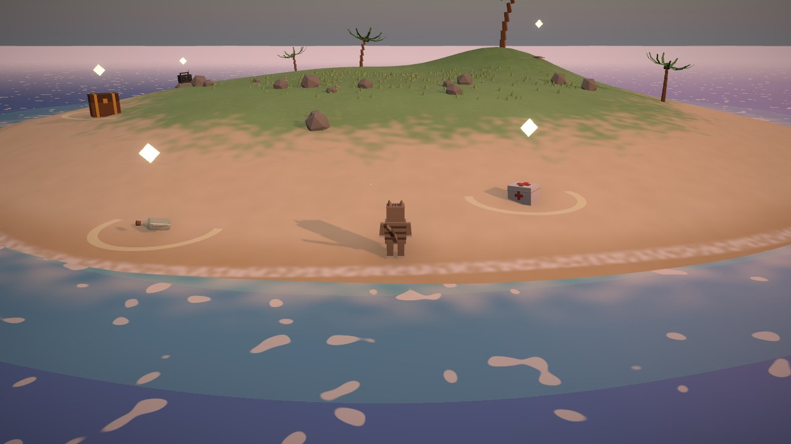
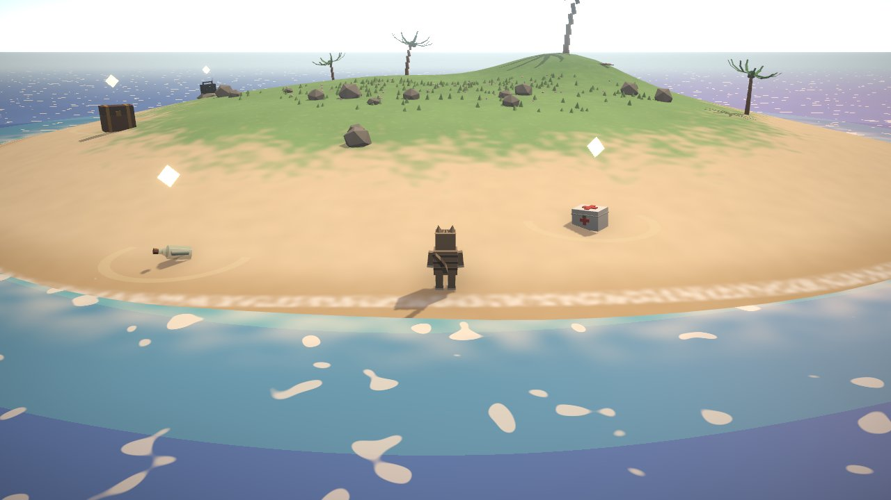
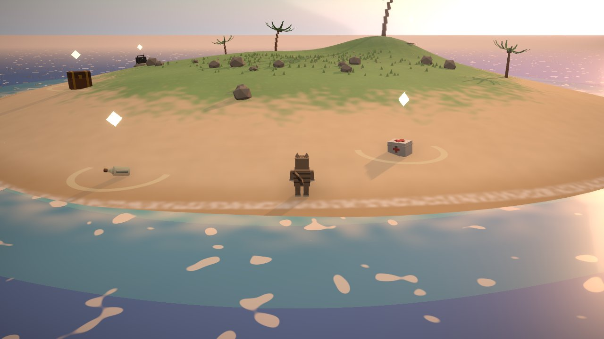
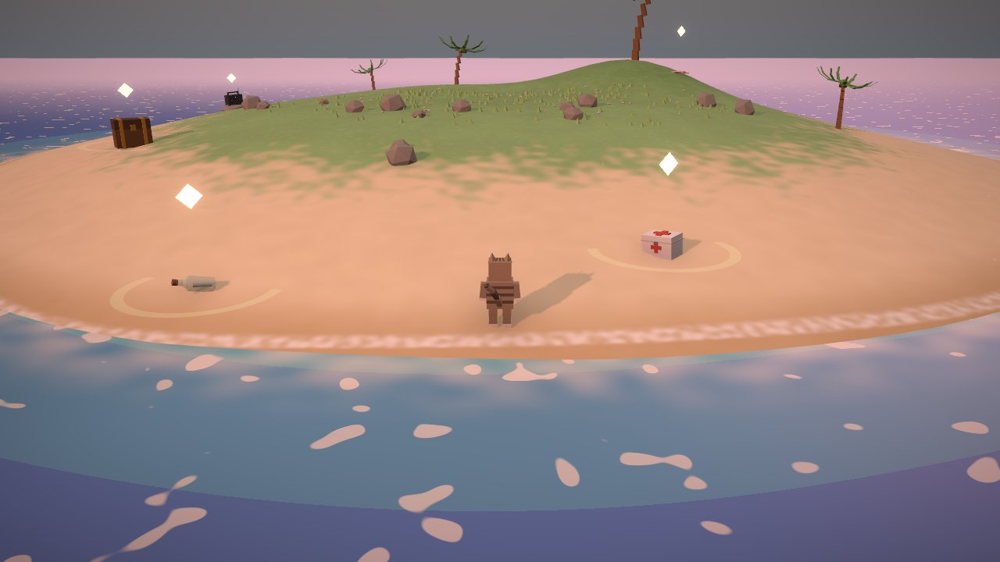
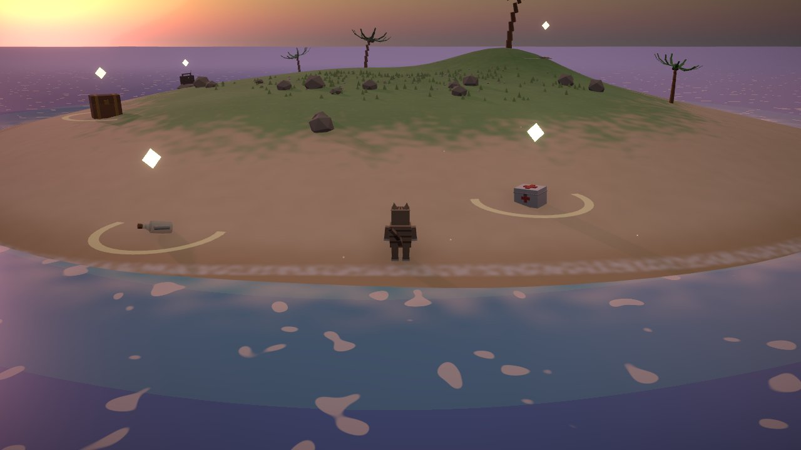
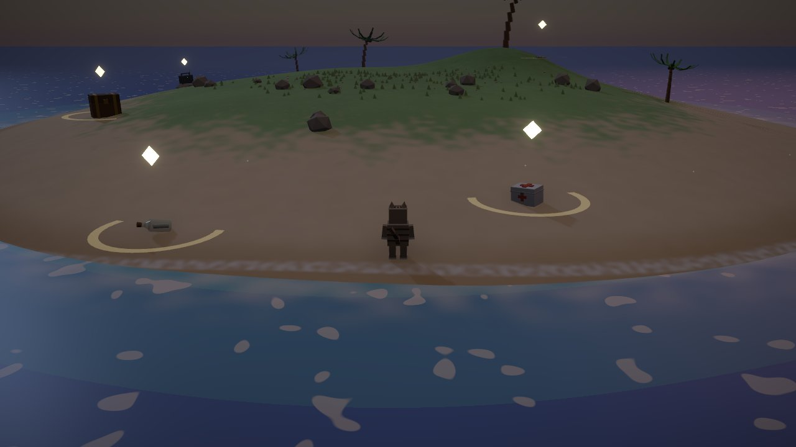

New this round: the island now follows the visitor's local clock (strip below), the island is ~18% smaller, grass got patchy texture + flowers, and the water bands wobble and mottle. Pick one option per section, hit "copy my picks", and send the string to Claude. Every card links to a live preview.
Not a choice — this ships. The look blends smoothly through these moments based on the visitor's local time (cotton-candy sunset is the signature). Preview any hour live with ?time=19.25 etc.






Refinements of the sunset moment — water, sand, grass, and sky tint move together.
All variants now have mottling texture + wobbling band shapes. Judged at sunset.
Five silhouettes, shot at golden hour. Changes every tree on the island.
Face-on at midday for true colors.
Shot at dusk, when they matter most.